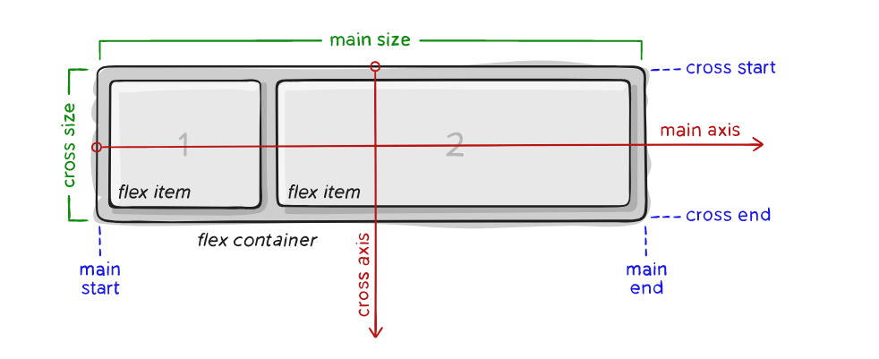

Flexbox CSS
Flex (también llamado flexbox) es un sistema de elementos flexibles que llega con la idea de una mecánica más potente, limpia y personalizable, en la que los elementos HTML se adaptan y colocan automáticamente y es más fácil personalizar los diseños de una página web.
Flex está especialmente diseñado para crear, mediante CSS, estructuras de una sóla dimensión.
Elementos
Flexbox es un módulo completo y no una propiedad única; algunos de ellos deben declararse en el contenedor (el elemento principal, que llamamos de flex container), mientras que otros deben declararse en los elementos secundarios (el flex ítems). Si el diseño "estándar" se basa en las direcciones block e inline, el diseño Flex se basa en direcciones de "flex flow". A continuación se muestra un diagrama de la especificación, que explica la idea central detrás del diseño Flex.
Los ítems se distribuirán en el diseño siguiendo el eje principal o transversal.
- Eje principal : el eje principal de un flex container es el eje primario y a lo largo de él son insertados los flex ítems. Precaución: El eje principal no es necesariamente horizontal; Dependerá de la propiedad flex-direction (vea abajo).
- Main-start | main-end : los flex ítems se insertan en el contenedor empezando por el lado start, dirigiéndose hacia el lado end.
- Tamaño principal : El ancho o alto de un flex ítem, dependiendo de la dirección del contenedor, es el tamaño principal del ítem. La propiedad de tamaño principal de un flex ítem puede ser tanto width como height, dependiendo de cuál esté en la dirección principal.
- Eje transversal : El eje perpendicular al eje principal se llama eje transversal. Su dirección depende de la dirección del eje principal.
- Cross-start | cross-end : Líneas flex se llenan con ítems y se agregan al contenedor, comenzando desde el lado cross start del flex container hacia el lado cross end.
- Cross size : El ancho o alto de un flex ítem, dependiendo de lo que haya en la dimensión transversal, es el cross size del ítem. La propiedad cross size puede ser el ancho o el alto del ítem, lo que se encuentre en la transversal.
- Ejes o Axes : son las dos direcciones básicas que existen en un Flex Container: main axis, o eje principal, y cross axis, o eje transversal.
- Flex-container : Es el elemento que involucra su estructura. Tu defines que un elemento es un Flex Container con la propiedad display y valores flex o inline-flex.
- Flex-item : son elementos secundarios del flex container.
Propiedades del elemento principal

Cuando usamos el Flexbox, es muy importante saber qué propiedades se declaran en el elemento principal (por ejemplo, una div que contendrá los elementos a alinear) y cuáles se declararán en los elementos secundarios. A continuación, se muestran las propiedades que deben declararse utilizando el elemento principal como selector (para alinear los elementos secundarios):
Display
Esta propiedad define un flex container; inline o block dependiendo de los valores pasados. Coloca todos los elementos secundarios directos en un contexto Flex.
Para activar el modo flex, utilizaremos sobre el elemento contenedor la propiedad display, y especificaremos el valor flex o inline-flex (dependiendo de como queramos que se comporte el contenedor):
- inline-flex : Establece un contenedor en línea, similar a inline-block (ocupa solo el contenido).
- flex : Establece un contenedor en bloque, similar a block (ocupa todo el ancho del padre).
Flex-direction
Establece el eje principal, definiendo así la dirección en la que los flex ítems están alineados en el flex container. Flexbox es (con la excepción de un wrapping opcional) un concepto de diseño unidireccional. Piensa en los flex ítems inicialmente posicionaids o en líneas horizontales o en columnas verticales.

Valores de flex-direction:
- row (estándar) : de la izquierda a la derecha en ltr (left to right), de la derecha a la izquierda en rtl (right to left).
- row-reverse : de la derecha a la izquierda en ltr, de la izquierda a la derecha en rtl.
- column : mismo que row, pero de arriba a abajo.
- column-reverse : mismo que row-reverse pero de abajo hacia arriba.
flex-wrap
Por estándar, los flex ítems todos intentarán encajarse en una sola línea. Con esta propiedad puedes modificar este comportamiento y permitir que los ítems pasen a la siguiente línea según sea necesario.

Valores de flex-wrap:
- nowrap (estándar) :todos los flex ítems estarán en una sola línea.
- wrap :los flex ítems se dividirán en múltiples líneas, de arriba a abajo.
- wrap-reverse : los flex ítems se dividirán en múltiples líneas de abajo hacia arriba.